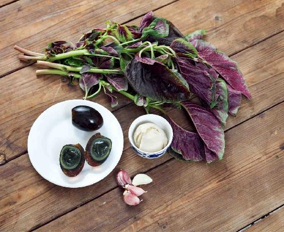
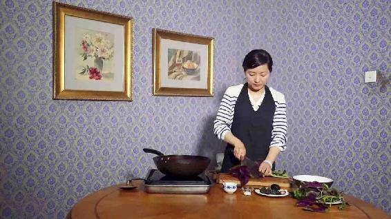
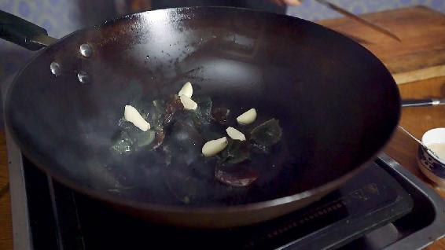
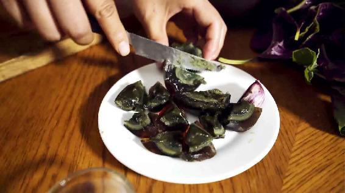
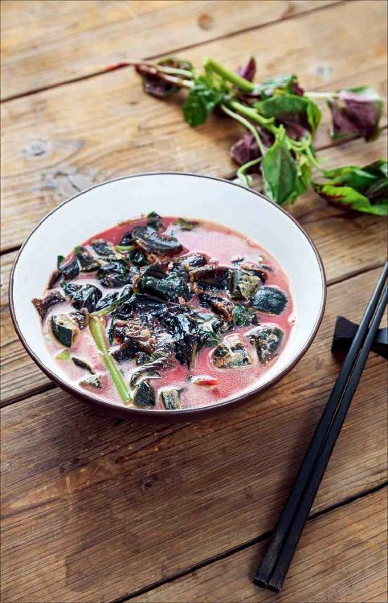

夏日的一个下午，我和两位朋友一边散步一边谈事情，走着走着，其中一位朋友突然发现他的手臂上起了一串红疹，他非常惊讶，不知道是怎么回事儿。其实在夏天，很多朋友都容易出现这种现象，这表示我们的体内有了血毒，所以皮肤上容易出现各种红疹。
这是身体里的血毒遇到了夏天的暑热之后，通过皮肤排出的一种表现，而且在人的肘窝和腘窝（膝盖窝）处最明显。
当肘窝和腘窝等处出现红疹时，表示这种血毒是偏热性的，叫血热毒。
大人、小孩都可能出现这种状况。
夏天的时候，有些小孩子手上脚上会突然长出圆圆的、小小的红印子，看起来像蚊子和虫子咬的包。出现这种情况，家长要注意分辨。
如果孩子身上起了一个小红包，这可能是蚊子咬的。但如果是起一串小红包，那家长就要注意了，最好是摸一摸孩子的额头，看是不是有一点发热。再摸摸他的全身，特别是脖子后面，看是不是也发热。
如果孩子的额头和全身，特别是后脖子都是发热的，就有可能是身体内的血热毒发作了。
家长要注意给孩子排血热毒；不要当成蚊子咬了，不加分辨就给孩子乱擦清凉油，或者当成发热来处理，给孩子吃退热药，那就调理错了。
如果红疹是血热毒造成的，可以用银花甘草茶来调理，但最好不要等到身体已经发了红疹再来调理。天一热就可以每天喝银花甘草茶，既解暑又清热解毒。若是长了红疹，喝银花甘草茶可以加倍。金银花药性缓和，用于皮肤问题时，量要多才管用。
在小暑节气，我给大家的节气食方松花蛋红苋汤，也是为了在盛夏来临时先清一清体内的血热毒，提前防范暑热天气会出现的这些问题。所以顺时饮食都是有讲究的，防患于未然。

原料：红苋菜（嫩的、带根的）1把，松花蛋2个，大蒜2〜3瓣，油（猪油最好），盐少许。
做法：

1.将整株的嫩苋菜带根清洗干净，有些比较长的苋菜，可以把它切成两半。

2.锅里放油烧热，蒜剥皮，切成两半，下锅爆香。

3.松花蛋剥好切成块儿，下锅快速翻炒，不然松花蛋会煳掉。再放入苋菜快速地翻炒两下，加一点儿盐。加入高汤或开水，不要放凉水，等汤烧开后，煮上两三分钟关火。
功效：
清血毒，排肠毒，祛暑热。

松花蛋红苋汤的味道其实是很鲜的。因为苋菜跟猪油是一个很好的搭配，这也是我强调这道汤最好是放猪油的原因。
猪油有两个作用：
第一，润肠、排毒，加强松花蛋红苋汤排毒的效果。
第二，“苋菜是很服猪油的”，这是我母亲的原话。意思是苋菜遇到猪油，它就会很顺从，这样煮出来的汤味道会很鲜。苋菜的鲜味全都在里面，鲜到什么程度呢？您不放味精都会觉得非常好喝。
松花蛋红苋汤做出来后，您会发现汤是红红的，所以您也不妨在给孩子吃的米饭上浇上一勺，染成红米饭。孩子看见这样红红的米饭应该会很喜欢。
在这道汤里，苋菜最好是连根一起来吃，这样排毒的效果更好。因为松花蛋红苋汤是通过肠道来排毒的，所以有些朋友喝了这道汤后，可能会去上厕所，对于便秘的朋友来说，喝了这道汤应该会很开心；而有些朋友，可能一天会去上两三次厕所，这个其实不用担心，这是人体在通过肠道排毒。
读者评论：松花蛋红苋汤，全家人都很喜欢喝
心静如水：松花蛋红苋汤好喝、味美，谢谢陈老师！
冰糖草莓：松花蛋红苋汤喝了非常舒服，全家人都很喜欢喝。